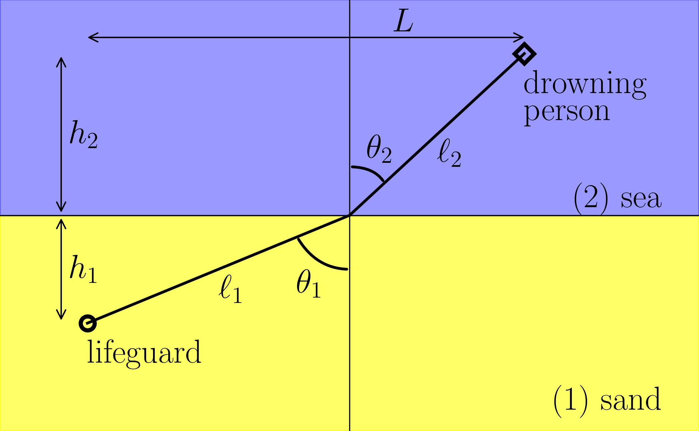
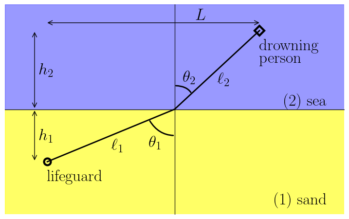

13 Best path

# this is a latex constant, don't change it.
pts_per_inch = 72.27
# write "\the\textwidth" (or "\showthe\columnwidth" for a 2 collumn text)
text_width_in_pts = 252.0
# inside a figure environment in latex, the result will be on the
# dvi/pdf next to the figure. See url above.
text_width_in_inches = text_width_in_pts / pts_per_inch
# make rectangles with a nice proportion
golden_ratio = 0.618
# figure.png or figure.eps will be intentionally larger, because it is prettier
inverse_latex_scale = 2
# when compiling latex code, use
# \includegraphics[scale=(1/inverse_latex_scale)]{figure}
# we want the figure to occupy 2/3 (for example) of the text width
fig_proportion = (3.0 / 3.0)
csize = inverse_latex_scale * fig_proportion * text_width_in_inches
# always 1.0 on the first argument
fig_size = (1.0 * csize,golden_ratio * csize)
# find out the fontsize of your latex text, and put it here
text_size = inverse_latex_scale * 12
tick_size = inverse_latex_scale * 8
# learn how to configure:
# http://matplotlib.sourceforge.net/users/customizing.html
params = {'axes.labelsize': text_size,
'legend.fontsize': tick_size,
'legend.handlelength': 2.5,
'legend.borderaxespad': 0,
'xtick.labelsize': tick_size,
'ytick.labelsize': tick_size,
'font.family': 'serif',
'font.size': text_size,
'font.serif': ['Computer Modern Roman'],
'text.usetex': True,
'figure.figsize': fig_size,
'text.latex.preamble': r'\usepackage{amsmath}',
}
plt.rcParams.update(params)
fig, ax = plt.subplots(figsize=fig_size)
fig.subplots_adjust(left=0.0, right=1.0, top=1.0, bottom=0.0,
hspace=0.02, wspace=0.02)
origin = [0, 0]
lifeguard = [-3, -2]
drowning = [2, 3]
xlim = [-4, 4]
ylim = [-4, 4]
##### drowning #####
# line
ax.plot([origin[0], drowning[0]], [origin[1], drowning[1]],
color="black", lw=2)
# diamond
ax.plot(drowning[0], drowning[1], "D", markerfacecolor="None", markersize=10, markeredgecolor="black",
markeredgewidth=3, color="black")
# explanation
ax.text(drowning[0], drowning[1] - 0.3, r"drowning", verticalalignment="top")
ax.text(drowning[0], drowning[1] - 0.8, r"person", verticalalignment="top")
##### lifeguard #####
# line
ax.plot([origin[0], lifeguard[0]], [origin[1], lifeguard[1]],
color="black", lw=2)
# circle
ax.plot(lifeguard[0], lifeguard[1], "o", markerfacecolor="None", markeredgecolor="black",
markersize=10, markeredgewidth=3, color="black")
# explanation
ax.text(lifeguard[0], lifeguard[1] - 0.3, r"lifeguard",
verticalalignment="top")
##### sand and sea background #####
sand = matplotlib.patches.Rectangle([xlim[0], ylim[0]],
(xlim[1] - xlim[0]),
(ylim[1] - ylim[0]) / 2.0,
color="yellow", alpha=0.6)
ax.add_patch(sand)
sea = matplotlib.patches.Rectangle([xlim[0], 0],
(xlim[1] - xlim[0]),
(ylim[1] - ylim[0]) / 2.0,
color="blue", alpha=0.4)
ax.add_patch(sea)
###### sand #####
ax.text(0.95, 0.05, r"(1) sand",
transform=ax.transAxes, horizontalalignment='right')
###### sea #####
ax.text(0.95, 0.50, r"(2) sea",
transform=ax.transAxes, horizontalalignment='right',
verticalalignment="bottom")
ax.spines['left'].set_position('zero')
ax.spines['right'].set_color('none')
ax.spines['bottom'].set_position('zero')
ax.spines['top'].set_color('none')
ax.set(xlim=xlim,
ylim=ylim,
xticks=[],
yticks=[])
ax.annotate("",
xy=(lifeguard[0] - 0.3, lifeguard[1]), xycoords='data',
xytext=(lifeguard[0] - 0.3, 0), textcoords='data',
size=tick_size,
arrowprops=dict(arrowstyle="<->",
connectionstyle="arc3"),
)
ax.text(lifeguard[0] - 0.2, lifeguard[1] / 2.0, r"$h_1$",
verticalalignment="center", horizontalalignment="left")
# h_2
ax.annotate("",
xy=(lifeguard[0] - 0.3, drowning[1]), xycoords='data',
xytext=(lifeguard[0] - 0.3, 0), textcoords='data',
size=tick_size,
arrowprops=dict(arrowstyle="<->",
connectionstyle="arc3"),
)
ax.text(lifeguard[0] - 0.2, drowning[1] / 2.0, r"$h_2$",
verticalalignment="center", horizontalalignment="left")
# L
ax.annotate("",
xy=(lifeguard[0], drowning[1] + 0.3), xycoords='data',
xytext=(drowning[0], drowning[1] + 0.3), textcoords='data',
size=tick_size,
arrowprops=dict(arrowstyle="<->",
shrinkA=0, shrinkB=0,
connectionstyle="arc3"),
)
ax.text((lifeguard[1] - lifeguard[0]) / 2.0, drowning[1] + 0.3, r"$L$",
verticalalignment="bottom", horizontalalignment="left")
# l1
ax.text(lifeguard[0] / 2.0, 1.10 * lifeguard[1] / 2.0, r"$\ell_1$",
verticalalignment="top", horizontalalignment="left")
# l2
ax.text(drowning[0] / 2.0, 0.95 * drowning[1] / 2.0, r"$\ell_2$",
verticalalignment="top", horizontalalignment="left")
# theta_1
ax.annotate("",
xy=(0, 0.5 * lifeguard[1]), xycoords='data',
xytext=(0.2 * lifeguard[0], 0.2 * lifeguard[1]), textcoords='data',
size=tick_size,
arrowprops=dict(arrowstyle="-", lw=2,
connectionstyle="angle3,angleA=-60,angleB=0"),
)
ax.text(0.1 * lifeguard[0], 0.5 * lifeguard[1], r"$\theta_1$",
verticalalignment="top", horizontalalignment="right")
# theta_2
ax.annotate("",
xy=(0, 0.3 * drowning[1]), xycoords='data',
xytext=(0.2 * drowning[0], 0.2 * drowning[1]), textcoords='data',
size=tick_size,
arrowprops=dict(arrowstyle="-", lw=2,
connectionstyle="angle3,angleA=120,angleB=0"),
)
ax.text(0.1 * drowning[0], 0.5 * drowning[1], r"$\theta_2$",
verticalalignment="top", horizontalalignment="left")
fig.savefig('best_path.png', dpi=300)